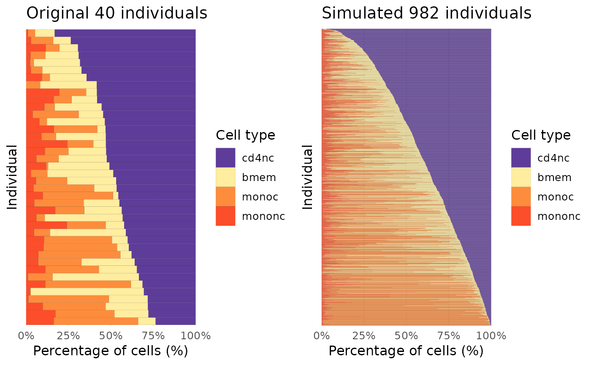

Model cell type proportions for new individuals
Chris Dong
Department of Statistics and Data Science, University of California, Los Angelescycd@g.ucla.edu
Yihui Cen
Department of Computational Medicine, University of California, Los Angelesyihuicen@g.ucla.edu
31 May 2025
Source:vignettes/scDesignPop-celltype-prop-modeling.Rmd
scDesignPop-celltype-prop-modeling.RmdIntroduction
scDesignPop provide modeling of the cell type proportions for generating new cell type proportions for new simulated individuals. The default covariates used are the PCs of the genotypes, which we will show in the following tutorial.
Library and data preparation
Here, we load the example_sce data with both the
genotype PCs of the training example_sce data and those of
the new simulated individuals.
library(scDesignPop)
data("example_sce")
data("example_genoPCs")
othercov_new <- dplyr::select(genopc_new, indiv)
head(genopc_train)
#> # A tibble: 6 × 31
#> indiv PC1 PC2 PC3 PC4 PC5 PC6 PC7 PC8
#> <chr> <dbl> <dbl> <dbl> <dbl> <dbl> <dbl> <dbl> <dbl>
#> 1 SAMP1 0.00988 0.0240 0.0552 -0.00774 -0.0239 0.0380 0.00775 -0.0179
#> 2 SAMP2 -0.0217 -0.00495 0.00717 -0.0191 0.000858 0.0210 -0.00205 -0.0159
#> 3 SAMP3 0.00503 0.0103 -0.00238 -0.0363 0.00505 -0.0245 0.0645 -0.0149
#> 4 SAMP4 -0.0410 0.0297 -0.0341 0.0263 -0.0249 0.0171 -0.00949 -0.00863
#> 5 SAMP5 -0.00978 0.0294 0.0504 -0.0194 -0.0179 0.0368 0.0135 0.0115
#> 6 SAMP6 -0.0212 -0.0106 -0.000811 -0.0106 0.0300 0.0547 0.00962 -0.0380
#> # ℹ 22 more variables: PC9 <dbl>, PC10 <dbl>, PC11 <dbl>, PC12 <dbl>,
#> # PC13 <dbl>, PC14 <dbl>, PC15 <dbl>, PC16 <dbl>, PC17 <dbl>, PC18 <dbl>,
#> # PC19 <dbl>, PC20 <dbl>, PC21 <dbl>, PC22 <dbl>, PC23 <dbl>, PC24 <dbl>,
#> # PC25 <dbl>, PC26 <dbl>, PC27 <dbl>, PC28 <dbl>, PC29 <dbl>, PC30 <dbl>
head(genopc_new)
#> # A tibble: 6 × 31
#> indiv PC1 PC2 PC3 PC4 PC5 PC6 PC7 PC8
#> <chr> <dbl> <dbl> <dbl> <dbl> <dbl> <dbl> <dbl> <dbl>
#> 1 NEW_SA… -0.0167 -4.34e-2 -0.0174 -2.63e-2 -0.0391 1.36e-2 0.00141 -0.0226
#> 2 NEW_SA… -0.0182 2.96e-2 -0.0114 -5.91e-2 -0.0170 6.63e-3 -0.00878 -0.0453
#> 3 NEW_SA… -0.0247 -1.73e-2 -0.00227 -8.02e-4 0.0589 -1.50e-2 -0.0375 0.0260
#> 4 NEW_SA… 0.0199 -4.28e-2 -0.0490 5.99e-2 -0.0323 1.22e-2 0.0627 0.0562
#> 5 NEW_SA… 0.0743 -3.98e-2 -0.0151 3.53e-2 -0.00486 4.28e-2 -0.0277 -0.0236
#> 6 NEW_SA… -0.00289 -8.21e-4 -0.0423 6.06e-4 0.0245 -9.70e-4 -0.0200 -0.0487
#> # ℹ 22 more variables: PC9 <dbl>, PC10 <dbl>, PC11 <dbl>, PC12 <dbl>,
#> # PC13 <dbl>, PC14 <dbl>, PC15 <dbl>, PC16 <dbl>, PC17 <dbl>, PC18 <dbl>,
#> # PC19 <dbl>, PC20 <dbl>, PC21 <dbl>, PC22 <dbl>, PC23 <dbl>, PC24 <dbl>,
#> # PC25 <dbl>, PC26 <dbl>, PC27 <dbl>, PC28 <dbl>, PC29 <dbl>, PC30 <dbl>Celltype proportion modeling
We model the cell type proportions with a Multinomial model using
genotype PCs as covariates. We also model the total cell number per
individuals with a log-normal distribution. Here,
indiv_colname is used to specify the shared column name for
individual ids in both the colData(example_sce) and
genopc_train. We use cellstate_colname to
specify the column name for the cell states or cell types in
colData(example_sce).
set.seed(123)
simu_cellprop_list <- scDesignPop::simuCellProportion(
sce = example_sce,
genoPC = genopc_train,
new_genoPC = genopc_new,
new_othercov = othercov_new,
PCnum = 30L,
cov_colnames = NULL,
indiv_colname = "indiv",
cellstate_colname = "cell_type",
cn_model_family = "lognormal", # cell number model
cp_model_family = "MN", # cell proportion model
cp_intercept = TRUE
)
#> Loading required package: SingleCellExperiment
#> Loading required package: SummarizedExperiment
#> Loading required package: MatrixGenerics
#> Loading required package: matrixStats
#>
#> Attaching package: 'MatrixGenerics'
#> The following objects are masked from 'package:matrixStats':
#>
#> colAlls, colAnyNAs, colAnys, colAvgsPerRowSet, colCollapse,
#> colCounts, colCummaxs, colCummins, colCumprods, colCumsums,
#> colDiffs, colIQRDiffs, colIQRs, colLogSumExps, colMadDiffs,
#> colMads, colMaxs, colMeans2, colMedians, colMins, colOrderStats,
#> colProds, colQuantiles, colRanges, colRanks, colSdDiffs, colSds,
#> colSums2, colTabulates, colVarDiffs, colVars, colWeightedMads,
#> colWeightedMeans, colWeightedMedians, colWeightedSds,
#> colWeightedVars, rowAlls, rowAnyNAs, rowAnys, rowAvgsPerColSet,
#> rowCollapse, rowCounts, rowCummaxs, rowCummins, rowCumprods,
#> rowCumsums, rowDiffs, rowIQRDiffs, rowIQRs, rowLogSumExps,
#> rowMadDiffs, rowMads, rowMaxs, rowMeans2, rowMedians, rowMins,
#> rowOrderStats, rowProds, rowQuantiles, rowRanges, rowRanks,
#> rowSdDiffs, rowSds, rowSums2, rowTabulates, rowVarDiffs, rowVars,
#> rowWeightedMads, rowWeightedMeans, rowWeightedMedians,
#> rowWeightedSds, rowWeightedVars
#> Loading required package: GenomicRanges
#> Loading required package: stats4
#> Loading required package: BiocGenerics
#>
#> Attaching package: 'BiocGenerics'
#> The following objects are masked from 'package:stats':
#>
#> IQR, mad, sd, var, xtabs
#> The following objects are masked from 'package:base':
#>
#> anyDuplicated, aperm, append, as.data.frame, basename, cbind,
#> colnames, dirname, do.call, duplicated, eval, evalq, Filter, Find,
#> get, grep, grepl, intersect, is.unsorted, lapply, Map, mapply,
#> match, mget, order, paste, pmax, pmax.int, pmin, pmin.int,
#> Position, rank, rbind, Reduce, rownames, sapply, setdiff, sort,
#> table, tapply, union, unique, unsplit, which.max, which.min
#> Loading required package: S4Vectors
#>
#> Attaching package: 'S4Vectors'
#> The following objects are masked from 'package:base':
#>
#> expand.grid, I, unname
#> Loading required package: IRanges
#> Loading required package: GenomeInfoDb
#> Loading required package: Biobase
#> Welcome to Bioconductor
#>
#> Vignettes contain introductory material; view with
#> 'browseVignettes()'. To cite Bioconductor, see
#> 'citation("Biobase")', and for packages 'citation("pkgname")'.
#>
#> Attaching package: 'Biobase'
#> The following object is masked from 'package:MatrixGenerics':
#>
#> rowMedians
#> The following objects are masked from 'package:matrixStats':
#>
#> anyMissing, rowMediansShowing the covariates for new individuals
The covariates including the cell types for the new simulated
individuals will be contained in the following data frame, which can be
given to the new_covariate parameter in function
constructDataPop().
head(simu_cellprop_list[["simu_cov"]])
#> cell_type indiv
#> simcell1_NEW_SAMP1 monoc NEW_SAMP1
#> simcell2_NEW_SAMP1 monoc NEW_SAMP1
#> simcell3_NEW_SAMP1 monoc NEW_SAMP1
#> simcell4_NEW_SAMP1 monoc NEW_SAMP1
#> simcell5_NEW_SAMP1 monoc NEW_SAMP1
#> simcell6_NEW_SAMP1 monoc NEW_SAMP1Visualizing the cell type proportion structures
By specifying the colors for each cell type, we can visualize the cell type proportion structure between the original data and simulated data after ordering individuals with the cell number of the first cell type. If no colors are specified for cell types, the function will still plot the data using the R default colors and ordering individuals based on the cell number of the first cell type after factorizing the cell types of the given data.
color_vec <- c(
"cd4nc" = "#5E3C99",
"bmem" = "#FFEDA0",
"monoc" = "#FD8D3C",
"mononc" = "#FC4E2A"
)
p1 <- scDesignPop::plotCellProp(colData(example_sce),
title = "Original 40 individuals",
color_vec = color_vec,
cellstate_colname = "cell_type",
indiv_colname = "indiv",
width = 1, linewidth = 0.02)
p2 <- scDesignPop::plotCellProp(simu_cellprop_list[["simu_cov"]],
title = "Simulated 982 individuals",
color_vec = color_vec,
cellstate_colname = "cell_type",
indiv_colname = "indiv",
width = 1, linewidth = 0.01)
cowplot::plot_grid(p1, p2)